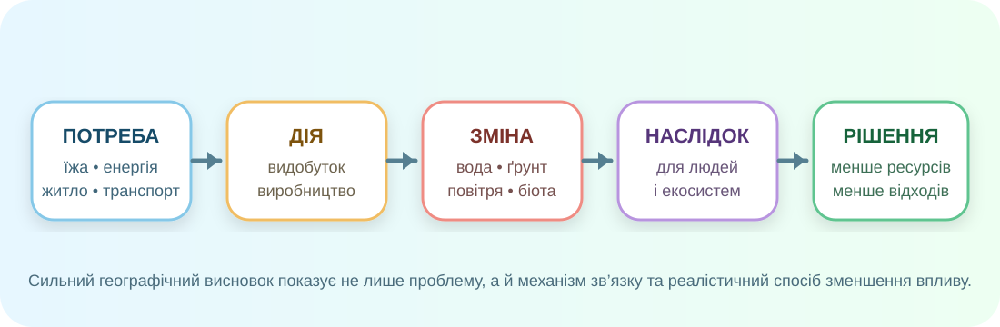
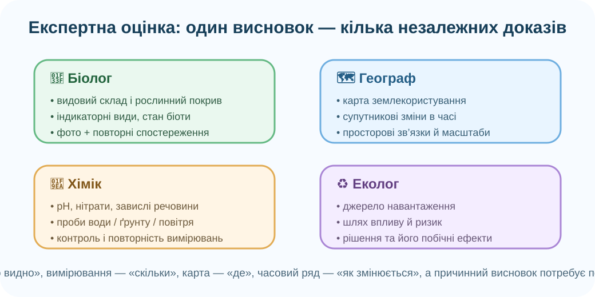

1. Господарська діяльність — це ланцюг, а не один об’єкт

Завдання: для будь-якої господарської дії знайдіть потребу, ресурс, зміну компонента природи, наслідок і можливе рішення.
Розкладіть приклад
2. Де господарство торкається природних оболонок?
OpenStreetMap. Знайдіть поля, дороги, населені пункти, водойми, промислові або енергетичні об’єкти. Не оцінюйте їх «на око» — спочатку лише фіксуйте просторові сусідства.
Ментальна карта «Людина і довкілля»
Оберіть об’єкт карти та впишіть 3 зв’язки: об’єкт → оболонка → механізм впливу.
Який доказ сильніший?
3. Супутники бачать зміни, але причина потребує перевірки

NASA Earth Observatory: часовий ряд вирубування в районі São Félix do Xingu, 2013–2018. Супутник добре показує зміну земного покриву в часі.
Що можна довести цим рядом?
Copernicus: карта земного покриву ≠ карта причин
Глобальний Copernicus Land Cover 2020 має просторову роздільність 10 м і створений із даних Sentinel‑2. Він корисний, щоб порівнювати типи покриву та їх просторове розташування, але для висновку «чому змінилося» потрібні додаткові дані.
Відкрити Copernicus Land Cover ↗4. Експертна група: «Еколог, біолог, географ, хімік»

Кейс: зеленіє ставок біля полів
Після теплої погоди вода стала зеленою. Який пакет даних найкращий для перевірки причин?
Сформулюйте ролі: біолог — стан організмів; хімік — склад води; географ — просторові зв’язки; еколог — шлях впливу й ризики.
5. Невиснажливе природокористування: обираємо не «ідеальне», а краще рішення

Peter Church / Geograph, CC BY-SA 2.0. Відновлювана енергетика зменшує залежність від викопного палива, але теж потребує землі, матеріалів та інфраструктури.
.jpg)
US EPA, public domain. Перероблення зменшує потребу в первинній сировині, але найкраща ієрархія починається зі зменшення споживання та повторного використання.
Модель, не прогноз
Індекс нижче — навчальний. Реальне рішення потребує оцінки життєвого циклу, місцевих природних умов, економічної доцільності й соціальних наслідків. «Зелене» рішення теж може мати побічні ефекти.
6. Коротке відео: як Sentinel‑2 допомагає картувати земний покрив
EU Defence and Space / Copernicus. Під час перегляду випишіть: 1) які дані отримує супутник; 2) що з них класифікують; 3) чому польова перевірка все одно важлива.
7. Теорія — тепер називаємо те, що вже побачили
Господарська діяльність
Діяльність людей, спрямована на виробництво товарів і послуг: сільське господарство, промисловість, енергетика, транспорт, будівництво, сфера послуг. Вона використовує ресурси й змінює потоки речовини та енергії між оболонками Землі.
Охорона природи
Система дій для збереження видів, екосистем, води, ґрунтів, повітря та природних процесів: заповідність, відновлення, контроль забруднення, екологічний моніторинг, правила використання ресурсів.
Невиснажливе природокористування
Використання ресурсів із урахуванням їх відновлення, меж екосистем і потреб майбутніх поколінь. Практичні принципи: менше матеріалу й енергії на одиницю користі; довший строк служби; повторне використання; ремонт; перероблення; відновлення природних територій.
Чотири питання до будь-якого «екологічного» рішення
1. Що саме воно зменшує?2. Чи переносить проблему в інше місце?3. Які дані це підтверджують?4. Чи працює воно в цьому масштабі й місцевості?
8. Підсумок CER
Ситуація: громада хоче зменшити вплив на довкілля. Варіант А — лише встановити більше контейнерів для сортування. Варіант Б — додатково скоротити одноразові матеріали, організувати повторне використання, компостування й облік відходів.
9. Домашнє завдання
§51. Оберіть один вид господарської діяльності у своїй місцевості. Побудуйте міні-схему: ресурс → дія → компонент природи → вимірюваний наслідок → спосіб зменшення впливу. Додайте один доказ: фото, фрагмент карти, відкриті дані або власне спостереження. Не робіть причинного висновку лише за фото.